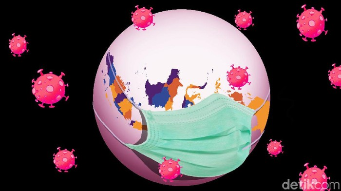
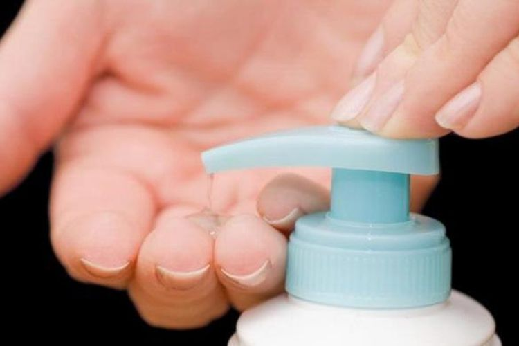

Tembus 10.118, Ini Sebaran Kasus Positif Corona di Indonesia 30 April 2020

Jakarta - Kasus positif virus Corona (COVID-19) di Indonesia mencapai angka 10.118 hari ini. Kasus
positif COVID-19 paling banyak berasal dari DKI Jakarta.
"Konfirmasi kasus positif pada hari ini 10.118," kata Juru Bicara Pemerintah Terkait Penanganan
Wabah Virus Corona, Achmad Yurianto, dalam konferensi pers yang ditayangkan YouTube BNPB, Kamis
(30/4/2020).
Yuri menuturkan jumlah kasus positif itu dominasi pasien berusia 30-59 tahun dengan persentase 54
persen. Kemudian disusul pasien berumur 60-79 tahun pada kisaran 16 persen.
Ini Bahan Pembuatan Hand Sanitizer Sesuai Anjuran WHO

JAKARTA, KOMPAS.com - Ketua Tim Pakar Gugus Tugas Penanganan Covid-19 Wiku Adisasmito mengungkap
beberapa bahan untuk membuat hand sanitizer secara mandiri sesuai anjuran World Health Organization
( WHO). Hal itu ia katakan dalam konferensi persnya di Graha BNPB, Jakarta, Senin (30/3/2020).
"Bahan-bahannya adalah ethanol 96 persen, gliserol 98 persen, hidrogen peroksida 3 persen, air
steril atau aquades," kata Wiku. Wiku menjelaskan hand sanitizer memang bisa digunakan untuk
membantu mencegah penyebaran virus corona yang menyebabkan penyakit Covid-19.